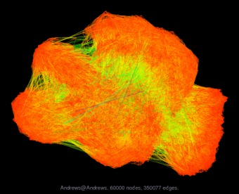

Visualizing Open Data
>%hdrrelated% ># Related > * [Blog-Archive] > * [Sparse Matrix Collection]
A Recent Discovery
As I was investigating software to visualize large graphs, I was delighted to discover the following image:

This was produced by sfdp, an algorithm from the Graphviz package that Yifan Hu designed to handle large graphs. Yifan has generated an impressive gallery of images from the entire Sparse Matrix Collection
from the University of Florida.
One of the reasons I was happy to find this visualization is that I helped make it (eight years ago). The nodes represent instances of handwritten digits 0 through 9, and the edges connect similar instances. Shameless plug aside, credit is due to Yifan Hu for creating the software and also to Tim Davis from the University of Florida who created and maintained the public Sparse Matrix Collection, enabling scientists to benefit from shared data. I just fiddled another dataset (the canonical MNIST digits) and uploaded it as described below.
Another reason why I was glad to see this visualization is that it confirms the opinion that, when done well and used judiciously, visualizations of large graphs can be meaningful. In this case, visualizing the graph is meaningful because the separation of ten clusters in 2-dimensions is a proxy for their separation in a k-dimensional embedding. Since embeddings are commonly used to analyze relationships of similarity, we gain some insight into their effectiveness for a particular domain.
Eight Years Ago
I was working at a research institute in Boston for the summer. For a project there, I needed to benchmark our newly-developed, memory-efficient classification algorithm against the current state-of-the-art.
This boiled down to solving a large eigenvalue problem using the method as described in a corresponding paper. The problem was so large that we ran out of memory. This was back in the days of 32-bit addressing and we had maxed-out our memory.
Seeking advice, I wrote Tim Davis who is the author of the eigenvalue solver that was prescribed. He suggested that I submit this dataset to his Sparse Matrix Collection, and said he would get back to me. He did get back to me, rather promptly I might add, to say that his off-the-shelf solver would not be able to handle this problem, period. At the time, this was good news because it validated our decision to focus on memory-efficiency.
blog comments powered by Disqus